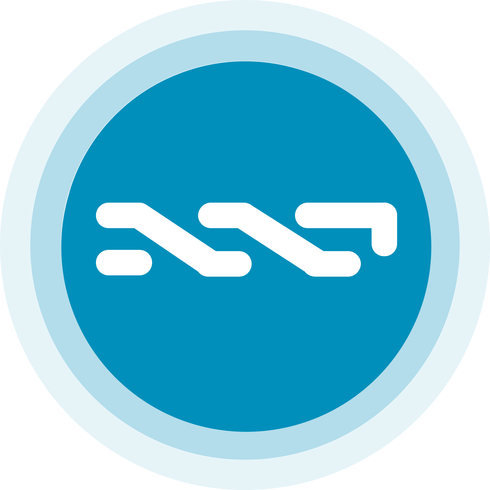
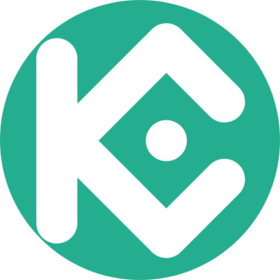

Blockchain
La Blockchain como su nombre la define es una Cadena de bloques conectados entre si, Esta tecnología funciona como libro de registros de todas la transacciones que se realizan, y con la particularidad de ser una base publica y abierta, facilitando el acceso a cualquier persona con un ordenador. Blockchain registra en todos los ordenadores participes de su red datos como cantidad, fecha, operación y participantes. Esta información una vez cargada en línea no puede ser modificada, impidiendo que se produzcan falsificaciones, formando así una base de datos, fiel, segura, rápida y Descentralizada.
Segura: Todas las operaciones que se realizan en la blockchain queda registradas mediante un código, esto gracias a la criptografía, tecnología en la que se basa la blockchain.
Rápida: La tecnología blockchain es altamente eficiente lo que le permite procesar una gran cantidad de información en muy poco tiempo, agilizando así las transacciones que se llevan a cabo.
Descentralizada: No hay organismos o instituciones detrás de las operaciones, es decir uno es responsable en su totalidad de la transacción que quiera realizar.
¿Como funciona la blockchain?
La tecnología blockchain funciona de una manera muy sencilla, cuando se produce una transacción esta es representada en un bloque que se transmite en todos los Nodos (usuarios) o partes de la red, esta misma red es la que valida esta transacción y añade el bloque creado a la cadena formando un registro permanente inalterable y transparente.
Blockchain y las criptomonedas
Lo primero que hay que tener en claro que blockchain no es Bitcoin o alguna otra criptomoneda, pero la tecnología blockchain si es fundamental para cualquier criptomoneda incluida bitcoin, debido a que las criptomonedas se basan en esta tecnología para sus operaciones y transacciones. Simplificando, Blockchain es la tecnología que permite las transferencias de criptoactivos de un individuo a otro, pero como comentamos su funcionalidad pasa por otro lado.
Criptomonedas
Son un activo digital que cuenta con un cifrado criptográfico que asegura la veracidad de la misma, es decir evita que se pueda realizar copias, esto garantiza la integridad de las transacciones, Las criptomonedas no poseen una versión física por lo que deben ser almacenadas en Wallet o bien en un Exchange.
Criptomonedas alternativas o Altcoins
El termino criptomonedas alternativas o mayormente conocidas como Altcoins, se utiliza para referirse a las criptomonedas diferentes a bitcoin o bien que se crearon como una alternativa al protocolo original de Bitcoin. Las Altcoins se pueden diferenciar en dos grupos bien marcados:
El primer grupo de altcoins, refiere a las criptomonedas que se construyeron usando el protocolo original pero que presentan algunas variantes en su código, originando una nueva blockchain con su propia criptomoneda y diferentes características. En este grupo destacan: Litecoin, Dogecoin, Namecoin, entre otras.
El segundo grupo de altcoins, construyo su propia blockchain y creo una una nueva criptomoneda nativa, así mismo algunas utilizan un algoritmo de minería distinto al del propio bitcoin. En este grupo destacan Ether, Omni, Nxt, entre otras

- 
Tokens
Dentro de los criptoactivos, podemos encontrar Tokens estos se diferencian dos categorías: Los tokens fungibles o intercambiables y los Tokens no fungible mejor conocidos como NFT, que son de carácter único e irrepetible.
Los tokens fungible o intercambiables son criptoactivos creados por una organización para gobernar su modelo de negocio y dar mas poder a sus usuarios para la interacción con sus productos, estos también se encuentran dentro de la blockchain y Aunque se pueden usar como medio de intercambio o pago, el objetivo es la representación de valor., dentro de ellos podemos encontrar los Fans token (PSG), Discount token (Kucoin token), entre otros

- 
Los Tokens no fungibles o NFT, son activos digitales cerfiticados mediante la tecnología blockchain, la criptografía de estos tokens es la que los convierte en activos únicos (No hay dos iguales, y no se pueden cambiar entre si) esto permite certificar que la persona que los adquiera sea su única propiertaria. Son activos singulares ya que son de carácter único e irrepetible, son indivisibles ya que a diferencia de las criptomonedas que podemos comprar esta no puede ser comprada en partes (0.5 Btc) estos solo se puede comprar la totalidad de la unidad, son escasos y exclusivos ya que solo pueden definirse una sola vez en la red blockchain, siendo imposible que otra persona lo vuelva a registrar.
¿Cuál es la diferencia entre las criptomonedas y los Tokens?
Si bien las criptomonedas y los tokens tienen semejanzas en cuanto a que ambos son una unidad de valor, aceptadas por una comunidad y existentes en una blockchain. Su principal diferencia entre estos criptoactivos es que las criptomonedas funcionan en una cadena de bloques propia e independiente, mientras que los tokens son creados en blockchains ya existentes, y además estos últimamente mencionados no cuentan con la posibilidad de ser minados.